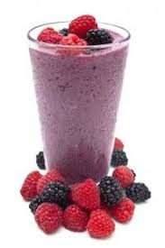

Protein Smoothie

Simple. Delicious. Nutritious.
Recover or fuel up with a delicious, nutritious, and simple protein smoothie. Only three ingredients.
Ingredients
- 1 cup frozen berries of choice (strawberry, blueberry, raspberry, blackberry)
- 1 scoop protein powder of choice (whey, grass-fed beef, pea, etc.)
- 3/4 cup cold water, or milk, or milk alternative of choice (dairy, coconut, almond, etc.)
Steps
- Add ingredients to blender
- Blend until smooth. Enjoy